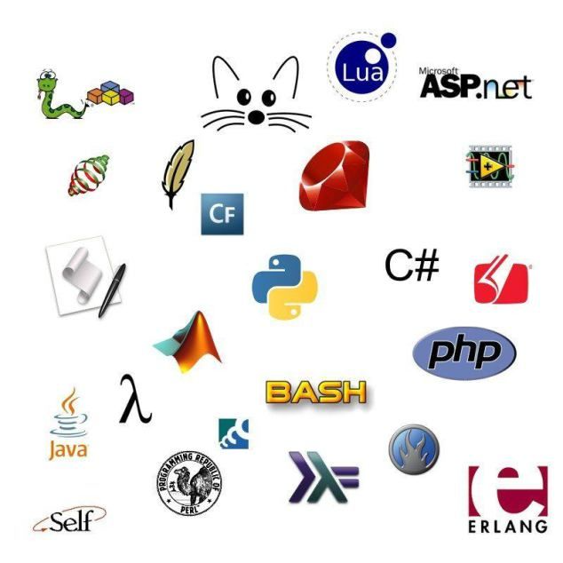
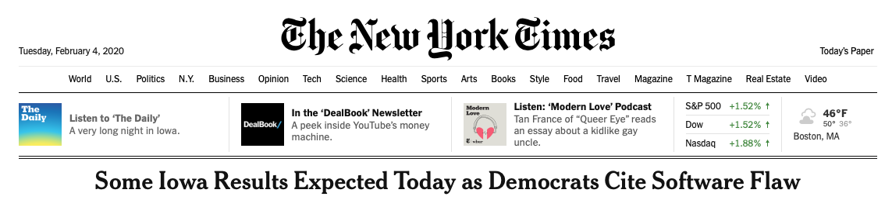
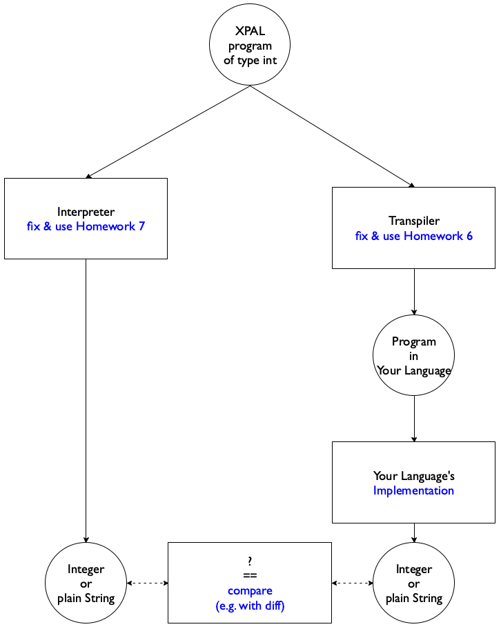
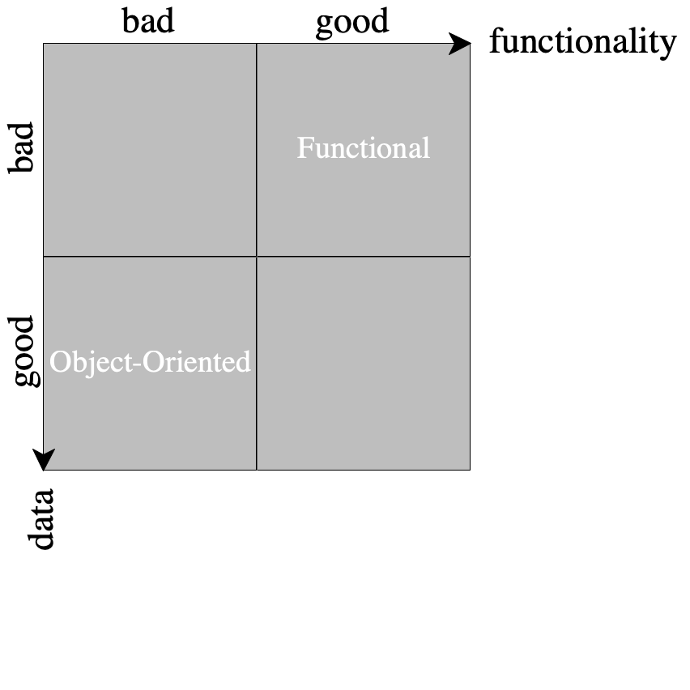
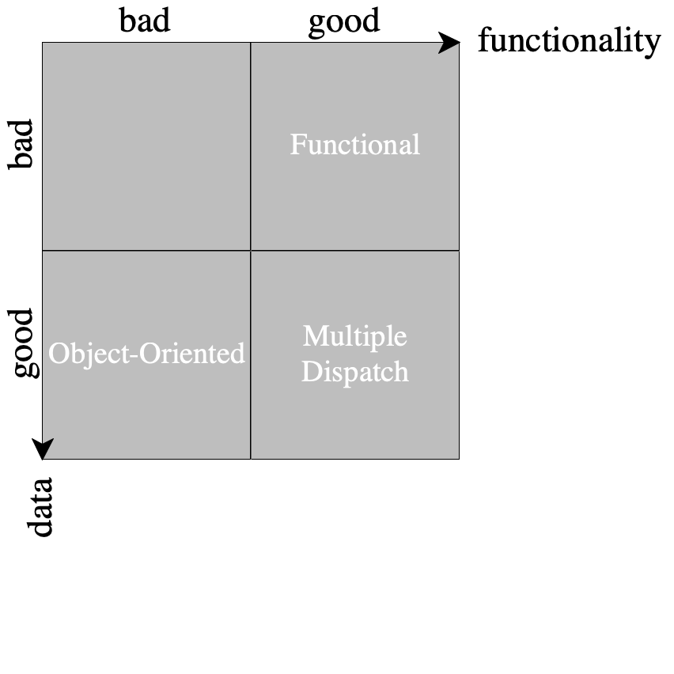
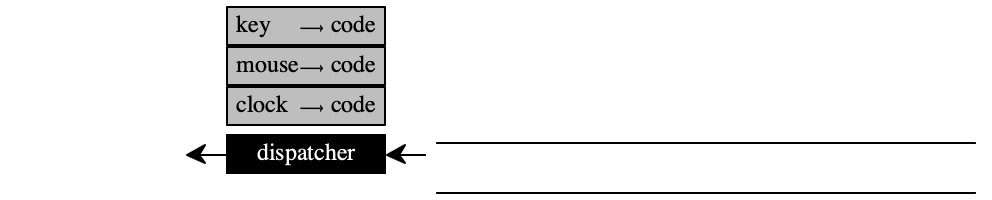
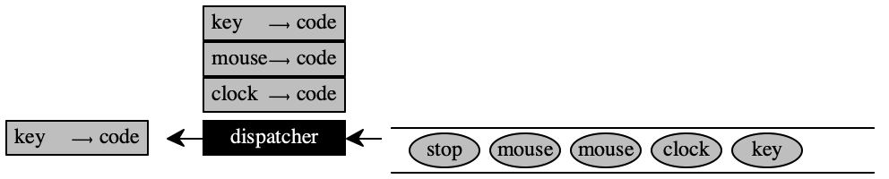
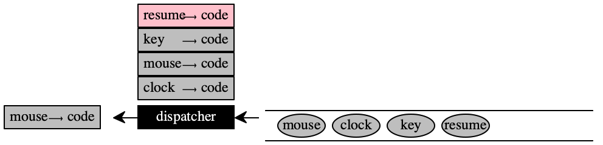

Principles of Programming Languages

I expect students to visit this page once per 24 hours starting with the first day of the semester.
Friday, April 10th, 2020 8:11:33pm
I have released an edited version of 26 —
The figure below shows how we will compute your final grade. It is written in the style of Fundamentals I using full Racket, (minus any special libraries).
| #lang racket |
| (module+ test (require rackunit)) |
| #; {type Percent = [0.0,1.0]} ;; exact |
| #; {type Grades = [List OKAYs OKAYs [Listof Project]]} |
| #; {type Project = [List Natural Natural]} ;; [actual score, max score] |
| #; {type OKAYs = [Listof OK]} |
| #; {type OK = U {'ok+ 'ok 'ok- 'zero}} |
| (define (% p) (/ p 100)) |
| (define LAB (% 5)) |
| (define PRESENT (% 5)) |
| (define PROJECT (% 90)) |
| (module+ test ;; data examples |
| (define projects-worst-first (cons [list 1 9] (make-list 11 (list 12 12)))) |
| (define labs-average-ok '[ok ok]) |
| (define presentations-okasy '[ok+]) |
| (define full-record (list labs-average-ok presentations-okasy projects-worst-first)) |
| (define labs-average (% (second (assq 'ok okays)))) |
| (define pres-average (% (second (assq 'ok+ okays)))) |
| (define p-minus-worst |
| (rest projects-worst-first)) |
| (define s-minus-worst |
| (4digits (/ (sum-map first p-minus-worst) (sum-map second p-minus-worst)))) |
| (define expected-grade |
| (+ (* LAB labs-average) (* PRESENT pres-average) (* PROJECT s-minus-worst)))) |
| ;; - - - - - - - - - - - - - - - - - - - - - - - - - - - - - - - - - - - - - - - |
| #; {Grades -> Percent} |
| (module+ test (check-equal? (final-grade full-record) expected-grade)) |
| (define (final-grade raw-grades) |
| (match-define (list lab-book presentations projects) raw-grades) |
| (+ (* LAB (okay->% lab-book)) |
| (* PRESENT (okay->% presentations)) |
| (* PROJECT (project-grade projects)))) |
| ;; - - - - - - - - - - - - - - - - - - - - - - - - - - - - - - - - - - - - - - - |
| ;; the okay grades as voted by the class |
| (define okays |
| '[[ok+ 98] |
| [ok 89] |
| [ok- 81] |
| [zero 36]]) |
| #; {OKAYs -> Percent} |
| (module+ test (check-equal? (okay->% labs-average-ok) labs-average)) |
| (define (okay->% o*) |
| (% (average (map (λ (o) (second (assq o okays))) o*)))) |
| ;; - - - - - - - - - - - - - - - - - - - - - - - - - - - - - - - - - - - - - - - |
| #; {[Listof Project] -> Percent} |
| (module+ test (check-equal? (project-grade projects-worst-first) s-minus-worst)) |
| (define (project-grade p) |
| (define total-score (sum-map first p)) |
| (define max-score (sum-map second p)) |
| (argmax values ;; take away the assignment that maximizes your project score |
| (for/list ([p p][i (in-naturals)] #:unless (= i 10)) |
| (match-define (list score max) p) |
| (define without-assignment-i (/ (- total-score score) (- max-score max))) |
| (4digits without-assignment-i)))) |
| ;; - - - - - - - - - - - - - - - - - - - - - - - - - - - - - - - - - - - - - - - |
| (define (4digits x) (string->number (~r #:precision 4 x))) |
| (define (average o*) (/ (apply + o*) (length o*))) |
| (define (sum-map f l) (apply + (map f l))) |

Tuesday, April 7th, 2020 7:12:27pm
- Based on preliminary feedback from the code inspection team, you may need to repair your store representation or, more precisely, reconsider the kind of integers that go into the store. Since While is untyped, you need three kinds of integers in the store:
plain integers
tagged integers that represent the size of an array and, implicitly, how the array is stored
tagged integers that represent a reference to an array or, in deeply nested cases, to the same kind of tagged integer.
A good data definition for stores will probably include an ASCII diagram that spells out how scalars, arrays, and references within arrays to arrays are laid out in a store. If your store can grow to arbitrary size, (1) make it finite, (2) add a method that permits the setting of the space limit, and (3) inject a condition that explicitly signals when the CESK transitions for VarDecls run out of space. This will give you an idea of which unit tests need a collector for how much space.
Now design a heap like the one explained in 25 —
Space. The change in data representation should remain invisible to the mutator. So work below the store “module.” Do not include a collector. Continue to signal that your CESK machine is out of space.
This hint is completed when all unit tests pass again.
At this point you’re ready to tackle steps 1 and 3 of 12 —
Garbage Collection.

Monday, April 6th, 2020 4:01:16pm
By the deadline, 45 of your peers had voted. Three of these votes violated a constraint on the vote. The resulting averages are:
ok+
98
ok
89
ok-
81
zero
36

Sunday, April 5th, 2020 7:42:31pm
I have fixed the order of evaluation of expressions in 11 —

Friday, April 3rd, 2020 7:55:42pm
In response to questions about the CESK machine, I have updated 23 —
CEK, CESK and the code for the CESK machine. In response to questions about 11 —
CESK during lecture this morning and on Piazza, I have modified the grammar for "vec" declarations, clarified the prose concerning error messages, and fixed some typos.

Tuesday, March 31st, 2020 6:38:03pm
I have fixed typos in 23 —

Friday, March 27th, 2020 4:00:00pm
the revised version of 22 —
C, CC, CK; the revised version of 10 —
Control shows Racket code for the "grab" examples; a small fix to 10 —
Control.

Tuesday, March 24th, 2020 2:00:30pm
Please see the revised poll concerning homework 13.
the revised version of 21 —
State Machines; the revised version of 10 —
Control with examples of how "grab" works; a revised office hour schedule; and
... which includes a link to Julia’s sign-up sheet for by-appointment meetings.
When you present code it is as important online as in person to discuss code that the audience can see. Also do not scroll while you present a particular piece of code. See In-Class Reviews.

Saturday, March 21st, 2020 10:41:35pm
In response to a Piazza post by Da-Jin Chu, I have ruled out the re-definition of prim-op names.

Thursday, March 19th, 2020 5:17:38pm
In response to a Piazza question, I clarified the continuation-passing
style transformation in 9 —

Tuesday, March 17th, 2020 12:22:18pm
In response to some student questions this morning, I have added a hint to 9 —

Saturday, March 14th, 2020 6:16:06pm
changed the due date of 9 —
CPS will turn the Tuesday (17 March) lecture into an on-line office hour
am considering moving the future deadline for homework assignment to tuesdays
This decision means that we will drop about one week of material. While I understand that PL is a fast-paced course, there’s lots to be covered. If possible and if there is an interest, I will run lectures after the semester ends to make up for this loss.

Wednesday, February 26th, 2020 4:00:41pm
(step 1) what are new alternatives
(step 2) modify the signature if necessary
(step 3) work thru new examples
(step 4) modify the template (in your head because you never wrote it down)
(step 5) provide new answers for the new or revised cases
(step 6) test the new unit tests
|
|
|
According to some of the TAs, many of you failed to follow thru. When you
code gets complex—

Wednesday, February 26th, 2020 2:47:04pm
We have shifted Julia’s office hours to Wednesday to accommodate the new due-date schedule as of this week.

Saturday, February 22nd, 2020 4:41:12pm
There is a niche research community that works on exactly this problem and has succeeded in extending OCaml’s and Haskell’s type system just so that they can remove such checks.
// IValue = IntVal | Closure | PrimOP |
// reprsents values that interpreter returns or stores in Env |
interface IValue { |
IValue apply_as_function(IValue arguments[]); |
} |
|
class IntVal implements IValue { |
private int x; // okay big ints |
|
public IValue apply_as_function(IValue arguments[]) { |
throw new RuntimeException("closure or primop expected"); |
} |
... |
} |

Tuesday, February 18th, 2020 5:24:33pm
visible |
| meaning |
| remarks |
expressions |
| value | ||
scope |
| environment |
| a region of program text |
variable |
| location |
| assignable variables |
mutation effects |
| store |
| represent order of effects |
type |
| claims |
| about a program’s behavior |
type checking |
| compatibility |
| check compatibility of type claims |
|
| with program syntax | ||
|
| without running the program | ||
|
| |||
type soundness |
| are types true? |
| are the claims correct predictions? |
The last row is about the relationship between visible ideas and meaning.
It is important to identify these ideas, to keep them separate, and to know where they belong.

Tuesday, February 11th, 2020 9:28:32am
Some of yuo still seem to have trouble understanding how the lessons of Fundamentals I, II, and III (OOD) apply to the big picture organization of programs in the world of PL. So here is a tabular view.
Component |
| Step |
View |
| read JSON: Simplicity and Complexity from file into internal JSexpr |
Control |
| parse JSexpr into Abstract Syntax Tree |
Model |
| map Abstract Syntax Tree to Typed Abstract Syntax Tree or Value |
Control |
| unparse Typed Abstract Syntax Tree or Value to JSexpr |
View |
| write JSexpr to file as JSON: Simplicity and Complexity |
The word map means type-check or interpret here.
JSON: Simplicity and Complexity is an externally defined information format.
JSexpr is the internal data representation of JSON. Your JSON library will define this representation; it is never JSON and you must make an effort to understand it.
Abstract Syntax Tree is a tree-shaped data representation of grammatically valid inputs.
Typed Abstract Syntax Tree is a tree-shaped data representation of Abstract Syntax Trees that satisfies the typing rules.
Value is the result of interpreting an [optionally Typed] Abstract Syntax Tree.

Saturday, February 8th, 2020 11:00:31am
Many of you fail to figure out data representations and a statement of purpose (or data interpretation). When you work In a language with types–say Java—
a well-named type definition with good function names gets you most of the way there; you still need to understand what the data represents. In a language without types— such as Python 3.7— it is critically important to write down your data representation. Otherwise you cannot produce even halfway viable code. Here is an illustration of this point with the ISL+ version (Fundamentals I) of the data definition for interpreter values(define-struct closure [parameters code environment]) (define-struct prim-op [n f]) ; type Values = Integer || ; (closure [Listof Var] VExpr Env) || ; (primop N (-> Val_1 ... Val_n Val)) ; ; Values are what the interpretation of every expression returns and what ; the interpreter associates with variables in the environment. Figure 1 sketches the Fundamentals II variant (and a bit more).You really want purpose statements for methods, too.
The interpreter_helper produces the values of expressions; it also has the effect of throwing an exception for an error situation.
The interpreter function/method produces the final answer, i.e., what the external observer (you and the test fest framework) will see and compare.
The test harness should really do nothing but read JSON, evaluate the given program to an answer, and print the result as JSON. Period.
// IValue = IntVal | Closure | PrimOP
// reprsents values that interpreter returns or stores in Env
interface IValue {
IValue apply_as_function(IValue arguments[]);
boolean arityCheck(int n_of_arguments);
}
// since the arity field and arity checking occurs in two classes,
// you should apply the abstraction design recipe from F II
class IntVal implements IValue {
private int x; // okay big ints
public IValue apply_as_function(IValue arguments[]) {
throw new RuntimeException("closure or primop expected");
}
...
}
// a programmer-created function
class Closure implements IValue {
...
}
// a baked-in primitive operatioon such expt
class PrimOp implements IValue {
private IBin op;
private int arity;
PrimOp(int arity, IBin op) {
this.op = op;
this.arity = arity;
}
}
// IBin represents binary function
interface IBin {
int call(int x, int y);
}
// - - - - - - - - - - - - - - - - - - - - - - - - - - - - - -
// in Main you can then write something like this to "play"
IValue expt = new PrimOp(2,
(int x, int y) ->
(int)Math.pow(x,(y > 0)?y:y));
// you could also raise an error after checking y
IValue arg[] = new IntVal[] { new IntVal(2), new IntVal(3) };
expt.apply_as_function(arg)

Thursday, February 6th, 2020 3:05:06pm
Your homework grades are higher than your code deserves.
Here is how the test fest works and how you must react to the results:
You get points if your solution passes my tests.
For now I have written simple tests that every basic solution should pass, and as it turns out, many of yours do—
with the emphasis on basic. You get points if your tests pass my solution.
You get points if your tests pass my oracle and expose a failure in someone else’s solution.
You do not lose points if your solution fails on the tests of others.
The goals are (1) to show you that your solution is flawed, (2) to get you to fix your solution in a timely fashion, and (3) without having a discouraging effect.
The time will come when I collect all submitted tests and run them as my tests on your solutions because you will have had plenty of weeks to get things right by then.

Tuesday, February 4th, 2020 1:58:34pm

Yes, software is bad.
If you didn’t see this headline, that’s to be expected. The NYT knows who you are and picks which headline to display for every article visible in your browser so that you click around and stay on its page as long as possible.

Friday, January 31st, 2020 2:08:16pm
I have update In-Class Reviews. Please take a look, especially if you haven’t presented yet.

Wednesday, January 29th, 2020 10:51:54am
Last Tuesday’s code walk displayed two major programming mistakes that did
not get discussed properly in class. Since 4 —
General The lectures present blueprints for your homework solutions. A blueprint is not an actual implementation but a sketch of what we eventually want. The real “thing” comes with variations, warts, and all. By implementing a blueprint, you get your hands dirty with the concepts and hopefully you develop an understanding in the process.
Mutation The code walk presented a mutable implementation of the
environment. Since Java comes with a mutable Stack library
and since the environment for VExpr was called a "stack" in class,
the presenters used Stack and somehow got it to behave
properly, mostly, kind of. In case your F II instructor did
not mention “frame tests,” they are tests that ensure the absence of
accidental side-effects of your method. (For example, note
the absence of “effect” statements—
Favor Immutability.
Abolish Assignment Statements.
interface IEnv { |
// extend this e with a binding of x to v |
IEnv extend(IEnv e, Var x, IValue v); |
|
// retrieve the value of x in this e |
IValue lookup(IEnv e, Var x); |
} |
|
class EmptyEnv implements IEnv { ... } |
class ExtEnv implements IEnv { ... } |
If your data definition does not refer to any other data definition, your function/method uses only language primitives.
If your data definition refers to other data definitions, your function/method typically calls functions/methods on the pieces of data from those data definitions.
If your data definition refers to itself, your function/method typically calls itself (via an interface in Java).
If you are dealing with several data definition at once, design the same number of function/methods in parallel.
If these data definitions refer to each other, like Decl and FVExpr, your functions/methods call each other.

Tuesday, January 28th, 2020 2:49:34pm
1. I have pushed a clarification concerning FDecls in 4 —
2. Someone expressed the desire to change the chosen implementation language. This is a perfectly reasonable desire, given how some languages are less helpful than others.
(2a) For a change from say TypeScript to JavaScript or from Racket to Typed Racket (and vice versa), there is no need to inform us. The two languages run on top of the same run-time system. Indeed, one may consider each language pair as a single language with support for writing typed and an untyped code.
(2b) For a change from say Python to Rust, you will need to write a brief memo addressed to Leif and myself consisting of about two paragraphs. The first one must describe the major shortcoming of the current language; the second one should express your hopes on how the next language will improve your lives.

Monday, January 27th, 2020 6:30:03pm
Dustin J. has to move his office hours for now; he may be able to move it back later in the semester. See Email, Office Hours, Etc..

Tuesday, January 21st, 2020 3:06:07pm
To accommodate the large number of students who misinterpreted the
homework, 2 —

Thursday, January 16th, 2020 8:55:05am
This short clip is a love letter to all those of you who
think that Node.js is new, fast, amazing, and whatever. (Not that threads
are the solution either.) As I said in class yesterday, science is not a
consensus business, a majority-rules area, or worst of all a fashion
industry—

Wednesday, January 15th, 2020 9:35:27am
Thanks to Nathaniel R. for pointing to a Python Wat repository. I am replicating it here for "eternity".

Tuesday, January 14th, 2020 4:31:41pm
Let me remind everyone that the web page for the course is easily reachable from my CCIS page:
A backup page is provided at my personal web page. It really is just a backup page in case CCIS’s web cache gets in your way. (Ask in class.) The primary page is provide thru the College’s server.

Tuesday, January 14th, 2020 12:16:10pm
2 —

Tuesday, January 7th, 2020 12:41:25pm
Every year Stackoverflow publishes a the results of surveying software developers. The 2019 results came out a couple of weeks back. Now that you have seen the first lecture, you understand that this is just one of many perspectives on programming languages and perhaps not even the most relevant one. It is still interesting to peruse the tables and figures for simple facts, such as Clojure programmers are the most highly paid programmers or only 7% of developers work less than 30 hours a week.
[As someone said after class, I followed the design recipe for programming in Algorithms and needed one or two hours; my friends didn’t and they needed two days.]

Sunday, December 8th, 2019 4:43:12pm
Please watch the original Wat Video. Some two years ago, Katie McLaughlin gave a really neat JavaScript is awe-ful presentation at Linux.Conf.Au, and I would like you to watch her talk after you are through with "Wat".
Then start thinking about which programming language you would like to use for solving the homework problems in this course. You may wish to use a language you know well or you may wish to learn more about a language that you know a little. (I recommend against learning a brand-new language.)
To make sure that we can automatically test your solutions, you will need to make sure that your language (1) runs on the College’s Linux boxes (see Delivery), (2) permits reading from standard input (STDIN) and writing to standard output (STDOUT), and (3) comes with a decent library for mapping JSON/XML/S-expression information to a data representation (reading) and back (writing).
